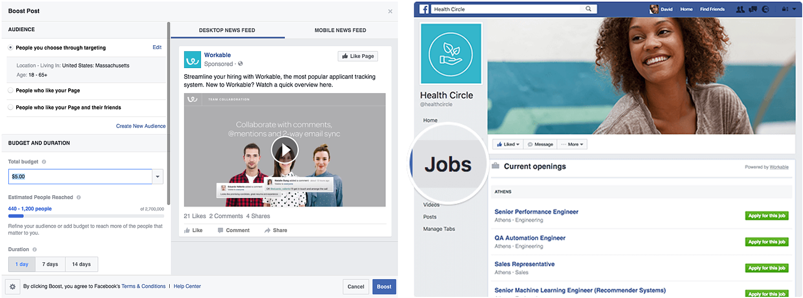

LinkedIn Design Challenge
Challenge
Design an improved job posting experience for recruiters or hiring managers that helps them attract and recruit relevant candidates for the position. One week to complete.
Outcome
A posting process that allows recruiters to reach candidates through the power of their trusted social networks. My full process documentation can be found here.
Skills Practiced
User research
User experience design
Interaction design

Research
Understanding the Problem
To begin, I listed questions I had from the reading prompt:
- What do recruiters need to know to post a job?
- How do recruiters reach candidates who are relevant to the job posted?
- What do candidates want to see in a job post?
I conducted some preliminary research on what recruiters might look for in their candidates, and created lists of things that recruiters might look for in their candidates. I listed some criteria and initial thoughts based on my experience job hunting and on LinkedIn’s existing search filters. This process helped me begin to think about information hierarchy and the posting process, and questions for real users.

Recruiter Interviews
Sample questions:
- How do you know what criteria is needed for a job?
- After posting a job, how much is receiving applications vs. how much is reaching out?
- How do you know who is a relevant candidate? How do you identify if a candidate is a good fit?
- Who do you find to be most responsive, and can you predict it?

Job posting involves targeting the right people using the right criteria. To post jobs, recruiters first need a clear understanding of the requirements of the job they’re posting, so that they can provide strong descriptions and accurate criteria. In some cases recruiters look to current employees’ networks or referrals to find people with similar backgrounds to people they already know. These are more reliable ways to find relevant, high-quality candidates.
I noticed that recruiters often rely on people they already know to finding quality candidates, so I wondered if there was a better way to communicate about the job opportunity with those people during the posting process. Also, was there a better way to gauge who’s interested and effectively reach out to them?
Candidate Interviews
I decided to talk to candidates as well because I wondered what they wanted to see in a job post, and whether that could inform the recruiter’s side to create more effective posts and potentially cut down work. Sample questions:
- Where do you look for jobs? Do you use LinkedIn?
- How do you determine if a job is a good fit for you?
- What would you like to know about a job before you apply to it?
- What is your general experience with recruiters (either contacting them or them contacting you)?

Most candidates have certain criteria in mind when job hunting, such as the job title or company name. Candidates enjoy hearing from people like them, such as past employees or people in the same field, to learn more about a job and a company. I wondered if there was a way for recruiters to show what candidates cared about more, and if they could reach people who were interested already based on criteria matches.
Competitive Analysis
I did some research on the recruiter’s side of LinkedIn, because I was not familiar with the interface. I looked at how recruiters create post jobs, how they manage and track candidates, and so on. Looking at existing job posts on LinkedIn, I also noticed that they are extremely text-heavy and cumbersome to read. One user I interviewed said most job descriptions are generic, and she doesn’t read them. Perhaps it’s not a good use of time for recruiters, then, to type these up.


Indeed
Indeed is the largest job board in the world, and its job posts are viewed by a huge pool of candidates. One thing I picked up about these job posts was that most of the fields are optional. This, in addition to the service being free for employers to use, made me question the quality of job postings. In comparison, LinkedIn marks many more required fields, making the search process easier for candidates, and maybe more difficult for recruiters up front but easier later when sorting through applicants.

Facebook Jobs
Facebook has an interesting method of targeting. Targeting people who “liked” certain pages reaches people with similar interests or backgrounds. The existence of Facebook Groups makes it easy to do something similar as well. Recruiters on Facebook can leverage social networks to reach distinct groups of people who will likely be interested in certain jobs, and at least one user mentioned his social network as his primary resource for finding job opportunities. LinkedIn has groups and job posting capabilities, but those posts don’t seem to be able to be as targeted for specific demographics, types of companies, candidate backgrounds, etc.
Design Prototype
Key Insights
- For effective targeting, recruiters need to know the business or field of the job they’re posting. A better understanding allows them to know what kinds of skills and experience they want in a candidate. These criteria are best known by the hiring manager themselves, or recruiters might look to current employees as examples.
- Social networks and relationships are one of the most valuable resources to both recruiters and job seekers. For recruiters it’s great to get candidate referrals from people they trust, and easiest to base candidate searches on people they already know.
- Keyword searches are easy to input and powerful ways to target and search. Candidates find text-based job descriptions generic, and they aren’t as searchable or parseable. The downside is that keywords aren’t comprehensive (i.e. a niche or new field won’t have a keyword tag).
Design Goals
I derived the main goals of my design:
- To make criteria clear and easy to input into a job post
- To help recruiters show information that candidates care about more, for higher engagement with candidates who are a good match
- To use social networks to reach more concentrated pools of relevant, quality candidates
As-Is Journey Map
Although I focused on the job posting part, I drew out a few more steps in the journey just to keep in mind. I didn’t want to design something in the posting part that would make something else more difficult later on.

Storyboard
The concept is, essentially, “I know Jennifer. I want to hire a Jennifer. Get this job in front of other Jennifers.”
- Briefing by hiring manager
Chris is a recruiter at PNC. She gets briefed by her hiring manager about a job opening for an Experience Designer position, a new role in the company. - New job post composition
Chris pulls up a new job post composition. She fills in the job title and location, the highest levels of information. - Add job details: Fill in desired skills, company description, etc.
Some fields are pre-filled based on the job title, such as job functions and company details. Chris fills in Skills based on what designers in similar roles and industries (i.e. designers at banks) have listed for themselves. She opts to leave the company details and application route the way they are. - Target candidates: Channel job post through connections who are likely to know good potential candidates
In this section, Chris can choose to prioritize who clicks the job post. The database finds people in her network who fit the job criteria , because they are likely to know people in their networks who are similar in terms of expertise, experience and background. She selects people she (and the system) thinks are likely to know designers who are interested in PNC. - Checkout: Set budget and place order
Finally, Chris sets her daily budget and places her order for the job post. She is content knowing that her money is being spent as effectively as possible on candidate views.


Iterations & Feedback
I received feedback on visual placement and layouts and how it led people to mentally group information. I also got feedback to use clearer explanations with my text, and to break down sections to better focus separate tasks. The following screencaps are iterations of the same page.


Final Screens


Walkthrough
Results
This design passed LinkedIn's Design Challenge round.
Reflection
For this challenge, I made informed decisions based on online research and a small sample of users, but I was aware that I was working off some assumptions. Given that my concept was emphasizing the value of social networks in job posting and recruiting, I would’ve liked to learn more about how well LinkedIn’s virtual networks reflect real-life social networks and interactions.
If I had more time, I would conduct user tests with my prototype to measure its value and how graspable the concept is. To measure its success, I would track whether recruiters take a shorter time to complete a job post, and whether a higher percentage of candidates who respond to the post feel “relevant” to recruiters and hiring teams.
I’d also be interested in building a more complete end-to-end system, further exploring the concepts I touched on in my low-fidelity wireframes that could tie into the main posting process. For example, perhaps Jennifer could receive a notification and have a process for introducing people she knows to the recruiter, so Chris could get more referrals too.